icpc.latam->regionals()
The ICPC Latin American Regionals (LAR) is organized to be held multi-sites, with centralized judging through MOJ (computers running Maratona Linux), same problemset, same timeframe (November’s 2nd saturday, starting 17:00 hrs UTC/GMT, 5 hours of duration). Best teams will advance to the Latam Championship…
Editions
Participating Countries
 Brazil(since 1996)
Brazil(since 1996) Mexico(since 1996)
Mexico(since 1996) Argentina(since 1997)
Argentina(since 1997) Colombia(since 1997)
Colombia(since 1997)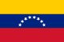
Venezuela(since 1997)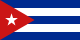
Cuba(since 1999) Peru(since 1999)
Peru(since 1999)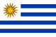
Uruguay(since 1999)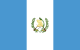
Guatemala(since 2000)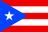
Puerto Rico(since 2000)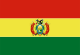
Bolivia(since 2003)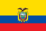
Ecuador(since 2003)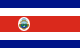
Costa Rica(since 2005) Dominican Republic(since 2009)
Dominican Republic(since 2009)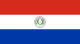
Paraguay(since 2012)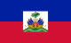
Haiti(since 2013)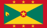
Grenada(since 2014)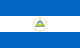
Nicaragua(since 2017)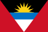
Antigua and Barbuda(since 2023)Regional & National Websites
Each of the six regionals has its own website, and some countries also run a national contest (and site) that selects the teams for the Regionals. Entries marked TBA are national websites we have not found yet. Every region and country can fix or add its links with a pull request: see how to contribute, or contact us.
Brazil
Regional website: Maratona SBC de Programação
Mexico
Regional website: ITESO – ICPC Mexico Regional
Mexico
Central America
Regional website: ICPC Centroamérica
Costa Rica
- National website: TBA
El Salvador
- National website: TBA
Guatemala
- National website: TBA
Nicaragua
- National website: TBA
Panama
- National website: TBA
Caribbean
Regional website: ICPC Caribe
Antigua and Barbuda
- National website: TBA
Cuba
- National website: TBA
Dominican Republic
- National website: TBA
Grenada
- National website: TBA
Haiti
- National website: TBA
Jamaica
- National website: TBA
Puerto Rico
- National website: TBA
Trinidad and Tobago
- National website: TBA
US Virgin Islands
- National website: TBA
South America/North
Regional website: ICPC South America/North
Ecuador
- National website: TBA
Venezuela
- National website: TBA
South America/South
Regional website: ICPC South America/South
Argentina
Chile
Paraguay
- National website: TBA
Peru
- National website: TBA
Uruguay
- National website: TBA
ICPC Bolivia is a community-maintained website, not an official site of the ICPC Foundation.